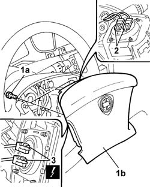

5580C18 AIR BAG MODULE - R.R.
- Path
- Procedures > 55 ELECTRICAL EQUIPMENT > 5580 SPECIAL ACCESSORIES > 5580C AIR BAG SYSTEM > 5580C18 AIR BAG MODULE - R.R.
- Kind
- repair procedure (removal / refitting; the operation number is the code)
- Applies to
- all engines; all production periods
- Interactive page
- https://sloeber94.github.io/elrnDB-lThss/en/#/79695
Applies to: all engines; all production periods
Applies to: all engines; all production periods
 Removing
Removing
 Refitting
Refitting1. Undo the Air Bag (1b) fixing bolts (1a).
- Move Air Bag module aside.
2. Release the safety retainer for the connectors using the special tool.
3. Disconnect the electrical conenctors.

Applies to: all engines; all production periods
- Place the Air Bag module in the special cupboard, resting it on a free surface with the bag facing upwards.
Applies to: all engines; all production periods
Refitting
Removing- Observe the following precaution.
- If a new module is being fitted, position the labels. Remove the detachable part of the adhesive label from the new module and place it in the special folder containing the vehicle details (model, registration date, chassis number) and the serial number of the old module. The file should be kept for future checks. A new adhesive plate comes together with the module and should be stuck on top of the existing one. Beforehand, however, it should be perforated at the month and 10 years after the year in which the module is being fitted (e.g. 2010 for 2000).
- Connect the driver's Air Bag electrical connectors.
- Fit the connector safety retainers.
- Place the Air Bag module back in its housing.
- Secure the Air Bag module tightening the fixing nuts.
- Connect the negative battery terminal.
- Check the operation of the system using the Examiner or other diagnostic equipment.